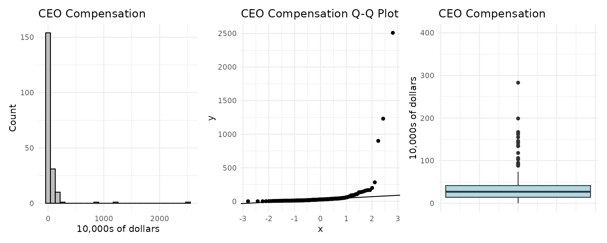
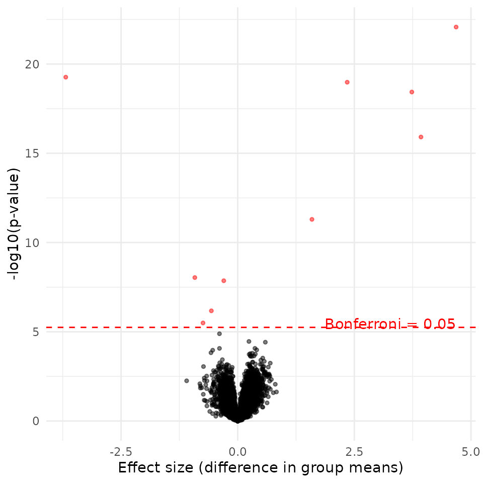
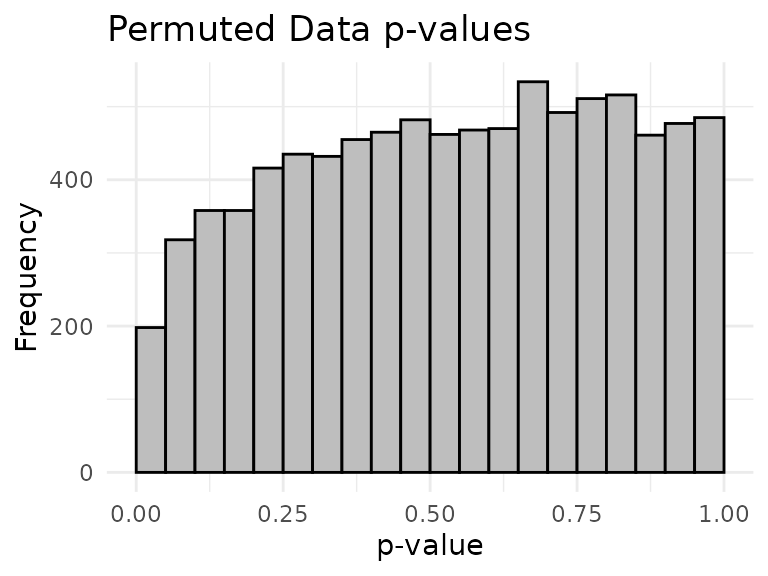
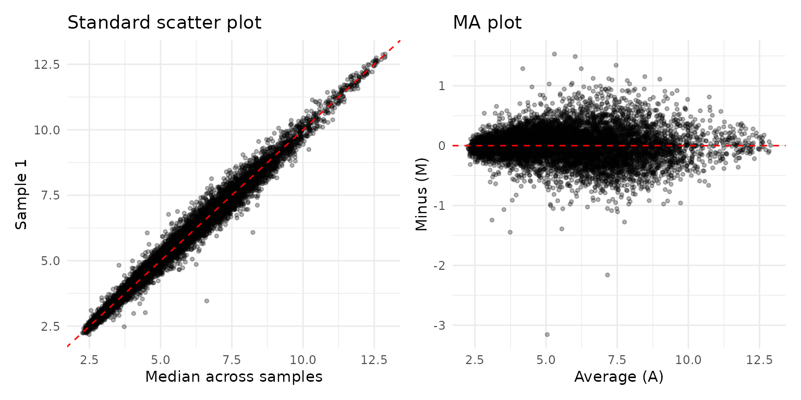
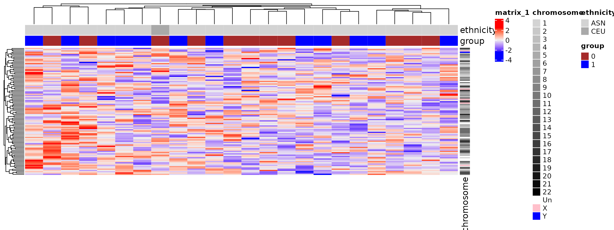

Applied Statistics for High-throughput Biology: Session 4
Levi Waldron
Source:vignettes/day4_batcheffects-vis.Rmd
day4_batcheffects-vis.RmdOutline
-
Exploratory
data analysis (Chapter 2)
- Quantile Quantile (QQ)-plots
- Boxplots
- Scatterplots
- Volcano plots
- p-value histograms
- MA plots
- heatmaps
- Batch effects (Chapter 10)
Exploratory data analysis
Introduction
“The greatest value of a picture is when it forces us to notice what we never expected to see.” - John W. Tukey
- Discover biases, systematic errors and unexpected variability in data.
- Graphical approach to detecting these issues. Represents a first step in data analysis and guides hypothesis testing.
- EDA helps us check the assumptions of our statistical tests.
- Opportunities for discovery are often in the outliers.
Quantile Quantile Plots
- Why use them? A primary tool for checking if our data follows a theoretical distribution.`
- Quantiles divide a distribution into equally sized bins (e.g., 100 bins for percentiles).
- We plot the quantiles from our data against the theoretical quantiles of a distribution (e.g., the normal distribution).
- If our data perfectly matches the theoretical distribution, the points will form a straight line (). Deviations from the line indicate our data does not fit that distribution.
Boxplots: About
- Why use them? Boxplots excel at showing the distribution of data, especially when it is not normally distributed (e.g., highly skewed data like income).
- They provide a simple, easy-to-interpret summary of the data’s range, center, and spread, while clearly highlighting outliers.
- Their greatest advantage comes from placing them side-by-side to compare distributions across multiple groups at once.
Boxplots: Example

Exploratory data analysis in high dimensions
library(GSE5859Subset)
data(GSE5859Subset) ##this loads three tables
class(geneExpression)
#> [1] "matrix" "array"
dim(geneExpression)
#> [1] 8793 24
class(sampleInfo)
#> [1] "data.frame"
dim(sampleInfo)
#> [1] 24 4
head(sampleInfo)
#> ethnicity date filename group
#> 107 ASN 2005-06-23 GSM136508.CEL.gz 1
#> 122 ASN 2005-06-27 GSM136530.CEL.gz 1
#> 113 ASN 2005-06-27 GSM136517.CEL.gz 1
#> 163 ASN 2005-10-28 GSM136576.CEL.gz 1
#> 153 ASN 2005-10-07 GSM136566.CEL.gz 1
#> 161 ASN 2005-10-07 GSM136574.CEL.gz 1Volcano plots: Setup
T-test for every row (gene) of gene expression matrix:
library(genefilter)
g <- factor(sampleInfo$group)
system.time(results <- rowttests(geneExpression, g))
#> user system elapsed
#> 0.005 0.000 0.005
pvals <- results$p.valueNote that these 8,793 tests are done in about 0.01s
Volcano plots: Example
#>
#> Attaching package: 'dplyr'
#> The following objects are masked from 'package:Hmisc':
#>
#> src, summarize
#> The following object is masked from 'package:MASS':
#>
#> select
#> The following objects are masked from 'package:stats':
#>
#> filter, lag
#> The following objects are masked from 'package:base':
#>
#> intersect, setdiff, setequal, union
Volcano plots: Summary
- A volcano plot lets us visualize both the statistical significance (p-value) and biological significance (effect size or fold change) at the same time for thousands of genes.
- Top-right/left corners: Genes with large effect sizes and high statistical significance. These are often the most interesting candidates.
- Top-center: Genes that are statistically significant but have a small effect size.
- Bottom: Genes that are not statistically significant, regardless of their effect size.
- Can color points by significance threshold. Check for asymmetry, which might indicate biases.
P-value histograms: Setup
- If all null hypotheses are true (i.e., no genes are truly differentially expressed), we expect a flat histogram of p-values, where every p-value from 0 to 1 is equally likely.
P-value histograms: Example 2 (permutation)
Note that permuting these data doesn’t produce an ideal null p-value histogram due to batch effects:
permg <- sample(g)
permresults <- rowttests(geneExpression, permg)
ggplot(data.frame(pvalue = permresults$p.value), aes(x = pvalue)) +
geom_histogram(breaks = seq(0, 1, 0.05), fill = "gray", color = "black") +
labs(title = "Permuted Data p-values", x = "p-value", y = "Frequency") +
theme_minimal()
P-value histograms: Summary
- Give a quick look at the overall results of a high-throughput experiment. A spike near zero suggests the presence of differentially expressed genes.
- A non-uniform histogram for permuted data is a red flag, suggesting non-independence between samples, often due to hidden batch effects.
MA plot
- Why use it? An MA plot is a clever transformation of a scatter plot, designed to better visualize differences between two samples (or one sample and a reference). It’s just a scatterplot rotated 45.
- The rotation helps us see systematic biases. The ‘A’ (Average) on the x-axis represents overall signal intensity, and the ‘M’ (Minus, or log-ratio) on the y-axis represents the fold change. This makes it much easier to see if the fold change is dependent on gene intensity.
library(ggplot2)
library(patchwork)
library(dplyr)
pseudo <- apply(geneExpression, 1, median)
df_ma <- data.frame(
Sample = geneExpression[, 1],
Pseudo = pseudo
) %>%
mutate(
A = (Sample + Pseudo) / 2,
M = Sample - Pseudo
)
p1 <- ggplot(df_ma, aes(x = Pseudo, y = Sample)) +
geom_point(alpha = 0.3, size = 1) +
geom_abline(slope = 1, intercept = 0, color = "red", linetype = "dashed") +
labs(title = "Standard scatter plot", x = "Median across samples", y = "Sample 1") +
theme_minimal()
p2 <- ggplot(df_ma, aes(x = A, y = M)) +
geom_point(alpha = 0.3, size = 1) +
geom_hline(yintercept = 0, color = "red", linetype = "dashed") +
labs(title = "MA plot", x = "Average (A)", y = "Minus (M)") +
theme_minimal()
p1 | p2
MA plot: Summary
- Useful for quality control of high-dimensional data.
- In an ideal MA plot, the cloud of points is centered on y=0 with no trend.
-
affyPLM::MAplotscreates better MA plots, adding a smoothing line to highlight departures from the horizontal.
Heatmaps
- Detailed representation of a high-dimensional dataset. The
ComplexHeatmappackage is the best as of 2025. - Important Note: Before plotting, we usually scale the data for each gene. This ensures the color pattern is driven by relative expression changes, not by a few highly expressed genes dominating the color scale.

Heatmaps: Summary
- Clustering becomes slow for thousands of rows but is great for visualizing co-expressed genes and sample groups.
Colors
- Palettes: sequential (gradient), diverging (two directions from a center), qualitative (categorical).
- Keep color blindness in mind (10% of men).
RColorBrewerhas colorblind-friendly options.
Plots To Avoid
“Pie charts are a very bad way of displaying information.” - R Help
- Avoid pie charts and doughnut charts. Humans are much better at judging length and position than angles and areas. A simple bar chart is almost always a better, clearer alternative.
- Avoid pseudo 3D plots. They distort the data and make comparisons difficult.
- Use color judiciously to highlight, not to decorate.
Batch effects
Pervasiveness of batch Effects
- Pervasive in genomics and have caused high-profile retractions.
- You can’t get rid of them, but you can design your experiment to manage them.
- The Golden Rule: Make sure batch is not confounded with your variable of interest.
- Consider this nightmare scenario:
- Batch 1: All your “Control” samples, processed on Monday.
- Batch 2: All your “Treatment” samples, processed on Tuesday.
If you find a difference, is it due to the treatment or the processing day? It’s impossible to know.
Prevent such “confounding” through blocking and randomization during experimental design.
Blocking and Randomization
-
Randomization is the process of randomly assigning
participants or experimental units to different treatments or batches.
- Randomization is the only way to guarantee there can be no systematic relationship between treatment and batch, or between study subject and treatment
-
Blocking is the process of grouping similar experimental
units together to control for known sources of variability (e.g., time,
technician, reagent lot).
- For example, if you have multiple technicians, you can block by technician to ensure each treatment is applied by each technician.
- This helps reduce variability and improve the accuracy of your results.
- Only works for known sources of variability
The batch effects impact clustering
# Data from a real study where date of processing was confounded with ethnicity
library(Biobase)
#> Loading required package: BiocGenerics
#> Loading required package: generics
#>
#> Attaching package: 'generics'
#> The following object is masked from 'package:dplyr':
#>
#> explain
#> The following objects are masked from 'package:base':
#>
#> as.difftime, as.factor, as.ordered, intersect, is.element, setdiff,
#> setequal, union
#>
#> Attaching package: 'BiocGenerics'
#> The following object is masked from 'package:dplyr':
#>
#> combine
#> The following objects are masked from 'package:stats':
#>
#> IQR, mad, sd, var, xtabs
#> The following objects are masked from 'package:base':
#>
#> anyDuplicated, aperm, append, as.data.frame, basename, cbind,
#> colnames, dirname, do.call, duplicated, eval, evalq, Filter, Find,
#> get, grep, grepl, is.unsorted, lapply, Map, mapply, match, mget,
#> order, paste, pmax, pmax.int, pmin, pmin.int, Position, rank,
#> rbind, Reduce, rownames, sapply, saveRDS, table, tapply, unique,
#> unsplit, which.max, which.min
#> Welcome to Bioconductor
#>
#> Vignettes contain introductory material; view with
#> 'browseVignettes()'. To cite Bioconductor, see
#> 'citation("Biobase")', and for packages 'citation("pkgname")'.
#>
#> Attaching package: 'Biobase'
#> The following object is masked from 'package:Hmisc':
#>
#> contents
library(genefilter)
library(GSE5859)
data(GSE5859)
geneExpression = exprs(e)
sampleInfo = pData(e)
year <- as.integer(format(sampleInfo$date, "%y")) - min(as.integer(format(sampleInfo$date, "%y")))
hcclass <- cutree(hclust(as.dist(1 - cor(geneExpression))), k = 5)
table(hcclass, year) # Clustering is driven by year of processing, not biology
#> year
#> hcclass 0 1 2 3 4
#> 1 0 2 8 1 0
#> 2 25 43 0 2 0
#> 3 6 0 0 0 0
#> 4 1 7 0 0 0
#> 5 0 2 5 80 26Approaches to correcting for batch effects
Methods can be categorized by their approach and data type:
-
Simple Rescaling (e.g.,
batchelor::rescaleBatches()):- Rescales batches to have the same mean/variance.
- Good for single-cell data because it maintains sparsity (zeros stay zeros).
-
For Known Batches (Bulk RNA-seq):
-
limma::removeBatchEffect()orsva::ComBat(): Use a linear model to regress out the effect of known batch variables (e.g., processing date, sequencing machine). Assumes cell type composition is similar across batches.
-
-
For Unknown Batches (Bulk RNA-seq):
-
sva::sva(): Identifies and creates “surrogate variables” that capture hidden sources of variation. Excellent when you don’t know the exact source of the batch effect but the p-value histogram looks problematic.
-
-
For Single-Cell Data Integration:
-
batchelor::fastMNN(): Finds Mutual Nearest Neighbors (MNNs) between batches to align them. Powerful for single-cell RNA-seq because it does not assume the same composition of cells across batches.
-